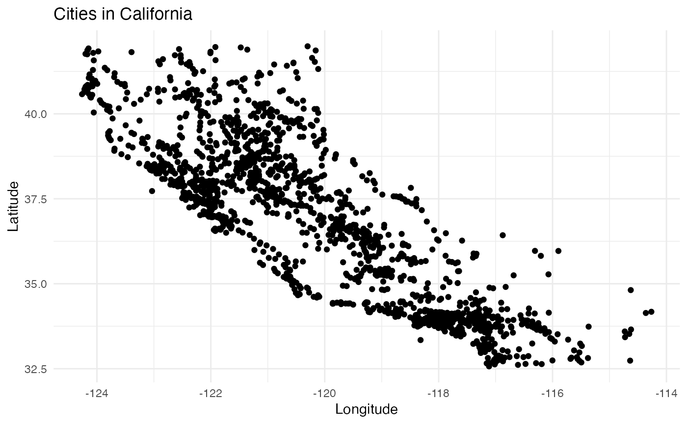

This dataset maps U.S. cities and states to their geographic coordinates (latitude and longitude). It provides detailed location information for approximately 31,909 cities across the United States, making it a valuable resource for geographic analyses, mapping, and location-based studies.
Format
A tibble with 31,909 rows and 4 variables:
- state
The name of the U.S. state (e.g., "Alabama", "California").
- city
The name of the city within the state (e.g., "Los Angeles", "Denver").
- latitude
The latitude of the city in decimal degrees (e.g., 34.0522).
- longitude
The longitude of the city in decimal degrees (e.g., -118.2437).
Details
Geographic data is sourced from authoritative mapping datasets, ensuring accurate coordinates.
This dataset can be used for:
Mapping and visualization of city-level data.
Location-based research and geographic clustering.
Integration with geospatial tools for further analysis.
Note: Latitude and longitude are provided in the WGS 84 coordinate system, a standard for global mapping.
Examples
# Load the dataset
data(cityStateToLatLong)
# View the first few rows
head(cityStateToLatLong)
#> # A tibble: 6 × 4
#> state city latitude longitude
#> <chr> <chr> <dbl> <dbl>
#> 1 Alabama Abanda 33.1 -85.5
#> 2 Alabama Abbeville 31.6 -85.3
#> 3 Alabama Adamsville 33.6 -87.0
#> 4 Alabama Addison 34.2 -87.2
#> 5 Alabama Akron 32.9 -87.7
#> 6 Alabama Alabaster 33.2 -86.8
# Filter for cities in Alabama
subset(cityStateToLatLong, state == "Alabama")
#> # A tibble: 593 × 4
#> state city latitude longitude
#> <chr> <chr> <dbl> <dbl>
#> 1 Alabama Abanda 33.1 -85.5
#> 2 Alabama Abbeville 31.6 -85.3
#> 3 Alabama Adamsville 33.6 -87.0
#> 4 Alabama Addison 34.2 -87.2
#> 5 Alabama Akron 32.9 -87.7
#> 6 Alabama Alabaster 33.2 -86.8
#> 7 Alabama Albertville 34.3 -86.2
#> 8 Alabama Alexander City 32.9 -85.9
#> 9 Alabama Alexandria 33.8 -85.9
#> 10 Alabama Aliceville 33.1 -88.2
#> # ℹ 583 more rows
# Plot cities in a specific state
library(ggplot2)
ggplot(
subset(cityStateToLatLong, state == "California"),
aes(x = longitude, y = latitude)
) +
geom_point() +
labs(title = "Cities in California", x = "Longitude", y = "Latitude") +
theme_minimal()

# Find the coordinates of a specific city
subset(cityStateToLatLong, city == "Denver" & state == "Colorado")
#> # A tibble: 1 × 4
#> state city latitude longitude
#> <chr> <chr> <dbl> <dbl>
#> 1 Colorado Denver 39.8 -105.